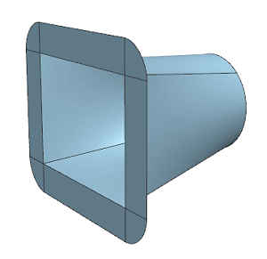

Specify the fit settings of the law extension
-
In the Settings group, set the following:
-
Laydown Base Profile =

-
Merge Faces if Possible =
-
Advanced Curve Fit =
Laydown Base Profile is selected by default.
This ensures that the base profile for a law extension is projected onto the supporting face to avoid any out-of-tolerance issues between the base profile and the constraint face.
Advanced Curve Fit lets you define a fit method based on:
-
Degree and Segments
-
Degree and Tolerance
-
Keep Parameterization
-
It is not available here because Merge Faces if Possible is selected.
-
-
Auto Fit
-
-
In the Settings group, from the Method list, select Auto Fit.
This lets you specify the minimum and maximum degree and the maximum number of segments of the fitted curve.
You will use the default settings for this activity.
-
Click OK or select another command to create the law extension.

-
Close the part without saving.